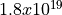
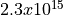
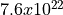
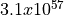
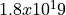

Random Variables¶
ns-3 contains a built-in pseudo-random number generator (PRNG). It is important for serious users of the simulator to understand the functionality, configuration, and usage of this PRNG, and to decide whether it is sufficient for his or her research use.
Quick Overview¶
ns-3 random numbers are provided via instances of
ns3::RandomVariableStream.
by default, ns-3 simulations use a fixed seed; if there is any randomness in the simulation, each run of the program will yield identical results unless the seed and/or run number is changed.
in ns-3.3 and earlier, ns-3 simulations used a random seed by default; this marks a change in policy starting with ns-3.4.
in ns-3.14 and earlier, ns-3 simulations used a different wrapper class called
ns3::RandomVariable. As of ns-3.15, this class has been replaced byns3::RandomVariableStream; the underlying pseudo-random number generator has not changed.to obtain randomness across multiple simulation runs, you must either set the seed differently or set the run number differently. To set a seed, call
ns3::RngSeedManager::SetSeed()at the beginning of the program; to set a run number with the same seed, callns3::RngSeedManager::SetRun()at the beginning of the program; see Creating random variables.each RandomVariableStream used in ns-3 has a virtual random number generator associated with it; all random variables use either a fixed or random seed based on the use of the global seed (previous bullet);
if you intend to perform multiple runs of the same scenario, with different random numbers, please be sure to read the section on how to perform independent replications: Creating random variables.
Read further for more explanation about the random number facility for ns-3.
Background¶
Simulations use a lot of random numbers; one study found that most network simulations spend as much as 50% of the CPU generating random numbers. Simulation users need to be concerned with the quality of the (pseudo) random numbers and the independence between different streams of random numbers.
Users need to be concerned with a few issues, such as:
the seeding of the random number generator and whether a simulation outcome is deterministic or not,
how to acquire different streams of random numbers that are independent from one another, and
how long it takes for streams to cycle
We will introduce a few terms here: a RNG provides a long sequence of (pseudo) random numbers. The length of this sequence is called the cycle length or period, after which the RNG will repeat itself. This sequence can be partitioned into disjoint streams. A stream of a RNG is a contiguous subset or block of the RNG sequence. For instance, if the RNG period is of length N, and two streams are provided from this RNG, then the first stream might use the first N/2 values and the second stream might produce the second N/2 values. An important property here is that the two streams are uncorrelated. Likewise, each stream can be partitioned disjointedly to a number of uncorrelated substreams. The underlying RNG hopefully produces a pseudo-random sequence of numbers with a very long cycle length, and partitions this into streams and substreams in an efficient manner.
ns-3 uses the same underlying random number generator as does ns-2: the MRG32k3a generator from Pierre L’Ecuyer. A detailed description can be found in http://www.iro.umontreal.ca/~lecuyer/myftp/papers/streams00.pdf. The MRG32k3a generator provides  independent streams of random numbers, each of which consists of  substreams. Each substream has a period (i.e., the number of random numbers before overlap) of . The period of the entire generator is .
Class ns3::RandomVariableStream is the public interface to this
underlying random number generator. When users create new random variables
(such as ns3::UniformRandomVariable,
ns3::ExponentialRandomVariable, etc.), they create an object that uses
one of the distinct, independent streams of the random number generator.
Therefore, each object of type ns3::RandomVariableStream has,
conceptually, its own “virtual” RNG. Furthermore, each
ns3::RandomVariableStream can be configured to use one of the set of
substreams drawn from the main stream.
An alternate implementation would be to allow each RandomVariable to have its own (differently seeded) RNG. However, we cannot guarantee as strongly that the different sequences would be uncorrelated in such a case; hence, we prefer to use a single RNG and streams and substreams from it.
Creating random variables¶
ns-3 supports a number of random variable objects from the base class
RandomVariableStream. These objects derive from
ns3::Object and are handled by smart pointers.
The correct way to create these objects is to use the templated CreateObject<> method, such as:
Ptr<UniformRandomVariable> x = CreateObject<UniformRandomVariable> ();
then you can access values by calling methods on the object such as:
myRandomNo = x->GetInteger ();
If you try to instead do something like this:
myRandomNo = UniformRandomVariable().GetInteger ();
your program will encounter a segmentation fault, because the implementation relies on some attribute construction that occurs only when CreateObject is called.
Much of the rest of this chapter now discusses the properties of the stream of pseudo-random numbers generated from such objects, and how to control the seeding of such objects.
Seeding and independent replications¶
ns-3 simulations can be configured to produce deterministic or random results. If the ns-3 simulation is configured to use a fixed, deterministic seed with the same run number, it should give the same output each time it is run.
By default, ns-3 simulations use a fixed seed and run number. These values
are stored in two ns3::GlobalValue instances: g_rngSeed and
g_rngRun.
A typical use case is to run a simulation as a sequence of independent trials, so as to compute statistics on a large number of independent runs. The user can either change the global seed and rerun the simulation, or can advance the substream state of the RNG, which is referred to as incrementing the run number.
A class ns3::RngSeedManager provides an API to control the seeding and
run number behavior. This seeding and substream state setting must be called
before any random variables are created; e.g:
RngSeedManager::SetSeed (3); // Changes seed from default of 1 to 3
RngSeedManager::SetRun (7); // Changes run number from default of 1 to 7
// Now, create random variables
Ptr<UniformRandomVariable> x = CreateObject<UniformRandomVariable> ();
Ptr<ExponentialRandomVariable> y = CreateObject<ExponentialRandomVarlable> ();
...
Which is better, setting a new seed or advancing the substream state? There is no guarantee that the streams produced by two random seeds will not overlap. The only way to guarantee that two streams do not overlap is to use the substream capability provided by the RNG implementation. Therefore, use the substream capability to produce multiple independent runs of the same simulation. In other words, the more statistically rigorous way to configure multiple independent replications is to use a fixed seed and to advance the run number. This implementation allows for a maximum of independent replications using the substreams.
For ease of use, it is not necessary to control the seed and run number from
within the program; the user can set the NS_GLOBAL_VALUE environment
variable as follows:
$ NS_GLOBAL_VALUE="RngRun=3" ./waf --run program-name
Another way to control this is by passing a command-line argument; since this is an ns-3 GlobalValue instance, it is equivalently done such as follows:
$ ./waf --command-template="%s --RngRun=3" --run program-name
or, if you are running programs directly outside of waf:
$ ./build/optimized/scratch/program-name --RngRun=3
The above command-line variants make it easy to run lots of different runs from a shell script by just passing a different RngRun index.
Class RandomVariableStream¶
All random variables should derive from class RandomVariable. This
base class provides a few methods for globally configuring the behavior
of the random number generator. Derived classes provide API for drawing random
variates from the particular distribution being supported.
Each RandomVariableStream created in the simulation is given a generator that is a
new RNGStream from the underlying PRNG. Used in this manner, the L’Ecuyer
implementation allows for a maximum of  random variables. Each
random variable in a single replication can produce up to  random numbers before overlapping.
random numbers before overlapping.
Base class public API¶
Below are excerpted a few public methods of class RandomVariableStream
that access the next value in the substream.
/**
* \brief Returns a random double from the underlying distribution
* \return A floating point random value
*/
double GetValue (void) const;
/**
* \brief Returns a random integer from the underlying distribution
* \return Integer cast of ::GetValue()
*/
uint32_t GetInteger (void) const;
We have already described the seeding configuration above. Different RandomVariable subclasses may have additional API.
Types of RandomVariables¶
The following types of random variables are provided, and are documented in the
ns-3 Doxygen or by reading src/core/model/random-variable-stream.h. Users
can also create their own custom random variables by deriving from class
RandomVariableStream.
class
UniformRandomVariableclass
ConstantRandomVariableclass
SequentialRandomVariableclass
ExponentialRandomVariableclass
ParetoRandomVariableclass
WeibullRandomVariableclass
NormalRandomVariableclass
LogNormalRandomVariableclass
GammaRandomVariableclass
ErlangRandomVariableclass
TriangularRandomVariableclass
ZipfRandomVariableclass
ZetaRandomVariableclass
DeterministicRandomVariableclass
EmpiricalRandomVariable
Semantics of RandomVariableStream objects¶
RandomVariableStream objects derive from ns3::Object and are
handled by smart pointers.
RandomVariableStream instances can also be used in ns-3 attributes, which means that values can be set for them through the ns-3 attribute system. An example is in the propagation models for WifiNetDevice:
TypeId
RandomPropagationDelayModel::GetTypeId (void)
{
static TypeId tid = TypeId ("ns3::RandomPropagationDelayModel")
.SetParent<PropagationDelayModel> ()
.SetGroupName ("Propagation")
.AddConstructor<RandomPropagationDelayModel> ()
.AddAttribute ("Variable",
"The random variable which generates random delays (s).",
StringValue ("ns3::UniformRandomVariable"),
MakePointerAccessor (&RandomPropagationDelayModel::m_variable),
MakePointerChecker<RandomVariableStream> ())
;
return tid;
}
Here, the ns-3 user can change the default random variable for this delay model (which is a UniformRandomVariable ranging from 0 to 1) through the attribute system.
Using other PRNG¶
There is presently no support for substituting a different underlying random number generator (e.g., the GNU Scientific Library or the Akaroa package). Patches are welcome.
Setting the stream number¶
The underlying MRG32k3a generator provides 2^64 independent streams. In ns-3, these are assigned sequentially starting from the first stream as new RandomVariableStream instances make their first call to GetValue().
As a result of how these RandomVariableStream objects are assigned to underlying streams, the assignment is sensitive to perturbations of the simulation configuration. The consequence is that if any aspect of the simulation configuration is changed, the mapping of RandomVariables to streams may (or may not) change.
As a concrete example, a user running a comparative study between routing protocols may find that the act of changing one routing protocol for another will notice that the underlying mobility pattern also changed.
Starting with ns-3.15, some control has been provided to users to allow
users to optionally fix the assignment of selected RandomVariableStream
objects to underlying streams. This is the Stream attribute, part
of the base class RandomVariableStream.
By partitioning the existing sequence of streams from before:
<-------------------------------------------------------------------------->
stream 0 stream (2^64 - 1)
into two equal-sized sets:
<-------------------------------------------------------------------------->
^ ^^ ^
| || |
stream 0 stream (2^63 - 1) stream 2^63 stream (2^64 - 1)
<- automatically assigned -----------><- assigned by user ----------------->
The first 2^63 streams continue to be automatically assigned, while the last 2^63 are given stream indices starting with zero up to 2^63-1.
The assignment of streams to a fixed stream number is optional; instances of RandomVariableStream that do not have a stream value assigned will be assigned the next one from the pool of automatic streams.
To fix a RandomVariableStream to a particular underlying stream, assign
its Stream attribute to a non-negative integer (the default value
of -1 means that a value will be automatically allocated).
Publishing your results¶
When you publish simulation results, a key piece of configuration information that you should always state is how you used the random number generator.
what seeds you used,
what RNG you used if not the default,
how were independent runs performed,
for large simulations, how did you check that you did not cycle.
It is incumbent on the researcher publishing results to include enough information to allow others to reproduce his or her results. It is also incumbent on the researcher to convince oneself that the random numbers used were statistically valid, and to state in the paper why such confidence is assumed.
Summary¶
Let’s review what things you should do when creating a simulation.
Decide whether you are running with a fixed seed or random seed; a fixed seed is the default,
Decide how you are going to manage independent replications, if applicable,
Convince yourself that you are not drawing more random values than the cycle length, if you are running a very long simulation, and
When you publish, follow the guidelines above about documenting your use of the random number generator.